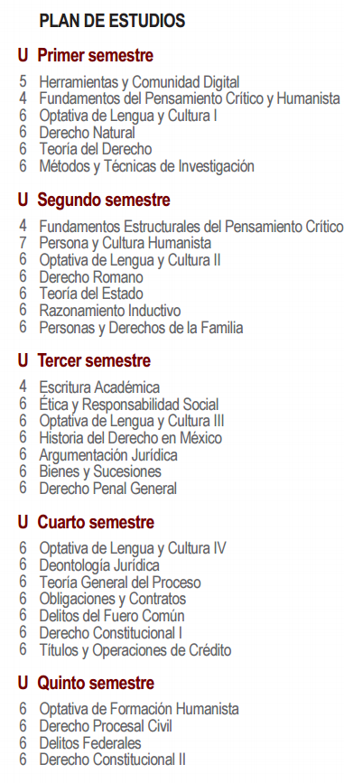
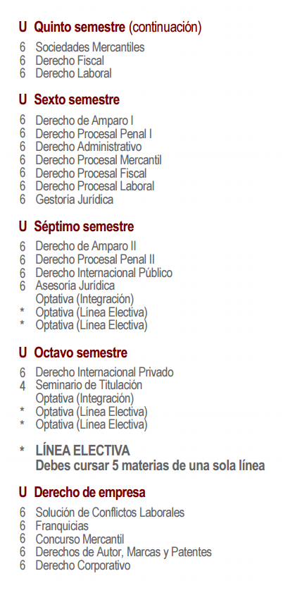
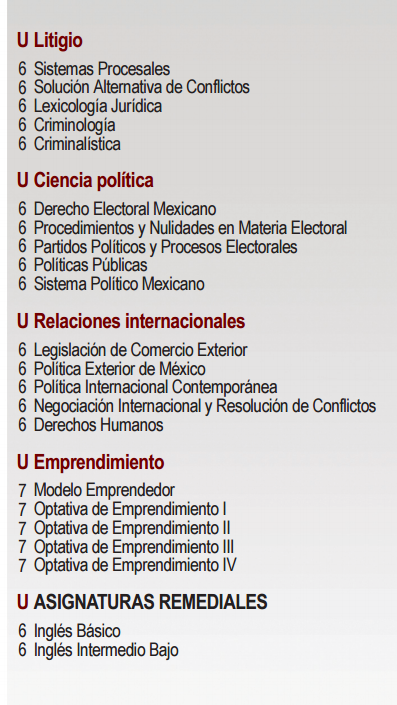

Carreras Universitarias

 13
13 24
24Guia de Carreras
luis angel ramirez flores
Acerca de
Acerca de esta aplicacion
Nombre:
Luis Angel Ramirez Flores
Grado y Grupo:
"4" "g"
Especialidad:
Programacion
Submodulo:
desarrolla aplicaciones Moviles
Docente:
Lic. Jose Antonio Gomez Hdez
Fecha
junio 2017
Ingenieria en sistemas
-
Perfil de egreso
Muestra el perfil de egreso e ingreso
-
Plan de estudios
Muestra informacion de los temas
Guia de carreras
luis angel ramirez flores
Licenciatura en Derecho
Tiene conocimientos en cultura general, ortografía y redacción.
Maneja habilidades de tecnología, apertura de pensamiento, disposición para aprender y lectura de comprensión.
Posee actitud flexible, servicial y carismática.
Promueve valores de honestidad, éticos, perseverancia y justicia.
Un Licenciado en Derecho puede desempeñarse en diversas áreas: en una empresa explicando cómo estructurarse, cómo entablar la relación con los socios, con los trabajadores, entre otros. Puede trabajar en el sector público, privado y social como asesor, consultor, abogado litigante e investigador.
Universidades que ofrecen la carrera de Derecho (Puebla)
UPAEP
Proceso de Admision
1. Ingresa al siguiente formulario y elige la fecha de examen de admisión que sea de tu interés, una vez completado te haremos llegar a tu correo electrónico registrado el usuario y contraseña para ingresar a nuestra plataforma y llenar tu solicitud de admisión, así como, para subir los documentos de admisión selecciona aquí.
1.1. Requisitos de Admisión a) Certificado de bachillerato o Constancia de calificaciones: la constancia deberá ser oficial, con calificaciones desglosadas de 1ro al 6to semestre (o su equivalente) y en caso de entregar certificado, deberá estar completo, con calificaciones hasta 6to semestre y para ambos, un promedio general mínimo de 7.0 y no tener asignaturas reprobadas.
b) Documento de identidad: podrás entregar cualquiera de los siguientes documentos - Acta de nacimiento, Pasaporte, CURP o cualquier otra identificación oficial que contenga tu nombre completo y fecha de nacimiento.
Si eres aspirante a la carrera de Medicina, deberás tener un promedio mínimo de 8.4 y ser menor de 23 años.
2. Para presentar tu Examen de Admisión - Deberás asistir puntual con una identificación en el lugar y día correspondiente.
3. Una vez admitido:
A tu correo electrónico llegará, la matrícula e indicaciones para continuar con el proceso de inscripción.
- Podrás cubrir en ese momento el monto de la inscripción.
- Antes del curso de inducción, se te harán llegar las fechas para presentar tus exámenes de ubicación.
DOCUMENTOS ADICIONALES:
- Para aspirantes que cursaron el bachillerato en dos o más instituciones Adicional a los requisitos anteriores, debes enviar Certificado Parcial o el Oficio de Resolución de Equivalencia expedido por la SEP del Estado de origen de la institución, validando el o los semestres estudiados en dicha institución. Lo anterior se deberá enviar por cada institución en la que hayas estudiado al menos un semestre de bachillerato.
- Para aspirantes con revalidación de materias La revalidación de materias de otras instituciones es un proceso independiente al de admisión, que se deberá llevar a cabo con el Director Académico una vez aprobado el examen de admisión.
Los documentos solicitados son: Constancia de calificaciones o Certificado Parcial de la universidad de origen y contenido temático de las asignaturas cursadas.
Para la carrera de Medicina, el contacto es el Dr. Nicolás Arturo Cervantes Soriano, nicolasarturo.cervantes@upaep.mx Para el resto de carreras, los datos del Director Académico se encuentran al final del plan de estudios de la carrera de tu elección.
- Para aspirantes de nacionalidad extranjera o con estudios en el extranjero Es muy importante que consultes los requisitos complementarios aquí y los integres en la plataforma en línea (Unisoft).
El dictamen emitido por el Comité de Admisiones es inapelable e irrevocable; no se concede revisión de examen.
Algunas de nuestras carreras son de mayor demanda y tienen CUPO LIMITADO, por lo que en caso de resultar Admitido(a), esto NO garantiza tu ingreso salvo con la inscripción pagada.
Guías de estudio - Exámenes de ubicación Exámenes de ubicación por carrera consulta aquí
Examen de ubicación de Inglés (No requiere guía de estudios)
Examen de ubicación de Física consulta aquí
Examen de ubicación de Matemáticas para Economía, Negocios consulta aquí
Examen de ubicación de Matemáticas para Ingenierías consulta aquí
Examen de ubicación de Cómputo consulta aquí
Curso de inducción 10 y 11 de Agosto 2017
Es obligatorio ASISTIR a todas las actividades programadas, entre las cuales se encuentran la toma de fotografía para la credencial, entrega de carga de materias y horarios de clases, entrega de reglamentos, conocimiento de autoridades, instalaciones, etc.
Entrega de documentos originales A partir del 14 de Agosto, debes entregar los documentos originales detallados en la Solicitud de Inscripción.

Universidad del VAlle de Puebla (UVP)
Proceso de Admision
- Regístrate por internet en el siguiente link:
SOLICITA
TU EXAMEN AQUÍ - *Asegúrate de escribir correctamente el e-mail que mas visitas, ya que ahí te llegará el ID para descargar tu Guía de Estudio
**La fecha del examen será la mas próxima a partir de tu solicitud o puedes cambiarla comunicándote a nuestros teléfonos. - ***El ID tarda una semana aproximadamente en llegar a tu correo dependiendo del numero de solicitudes recibidas. En caso de no ser así comunícate vía telefónica a nuestras instalaciones. Teléfonos: 01 (222) 266 94 88 y 266 94 89 Ext .124,208,227 LADA sin costo: 01-800-63-20422
- 2 Al momento de recibir tu clave podrás descargar tu guía de estudio en nuestra página web, en la sección de admisiones.
- 3 Preséntate en Módulo de Información ubicado en las instalaciones de la UVP una hora antes de presentar tu examen.
Lleva una fotografía tamaño infantil b/n. - 4 Realiza el pago de tu ficha de examen en nuestras instalaciones.
Universidad de las Americas Puebla (UDLAP)
Proceso de Admision
Revisa si tu preparatoria o bachillerato tiene un convenio con nosotros Si tu escuela tiene un convenio con nosotros, tendrás acceso a beneficios adicionales. Busca aquí tu preparatoria.
2 Presenta tu examen de nuevo ingreso Regístrate para realizar tu examen de nuevo ingreso en nuestro campus o consulta las fechas en las que visitaremos tu ciudad y agenda tu cita. Conoce las fechas de examen de nuevo ingreso y consulta la guía para presentarlo.
3 Primer entrega de documentos de admisión Una vez aprobado el examen de nuevo ingreso, puedes continuar con el procedimiento de admisión y obtener tu número de estudiante. Para ello, debes llenar la solicitud de nuevo ingreso y entregar una copia simple de tu acta de nacimiento o CURP; así como una constancia original con promedio acumulado de bachillerato o equivalente. Conoce aquí el proceso de la primera entrega de documentos. Licenciaturas con requisitos adicionales de admisión Considera que si quieres estudiar las licenciaturas en Administración de Negocios Internacionales, Danza, Médico Cirujano o Enfermería existen requisitos adicionales que debes cumplir. Consulta aquí los requisitos adicionales de admisión.
4 Realiza tu primer pago y recibirás tu horario de clase* Realiza el pago de 6 unidades (en los casos que aplique). *El horario de clases lo recibirás una vez iniciado el periodo de inscripciones previas.
5 Si quieres vivir dentro del campus tenemos un lugar para ti Los Colegios Residenciales son la opción para vivir dentro del campus, conoce más detalles de cómo reservar tu lugar. Conoce aquí los Colegios Residenciales.
Guia de Carreras
luis angel ramirez flores
Plan de Estudios
| PROGRAMA | |
|
Guia de Carreras
luis angel ramirez flores
Plan de Estudios



Guia de Carreras
luis angel ramirez flores
Plan de Estudios
- Herramientas Digitales de Aprendizaje
- Métodos de Estudio para el Desarrollo del Pensamiento y la Lengua I
- Persona, Sentido de Vida y Universidad
- Derecho Natural
- Métodos de Estudio para el Desarrollo del Pensamiento y la Lengua II
- Ética y Responsabilidad Social
- Derecho Romano
- Teoría del Derecho
- Historia del Derecho en México
- Teoría del Estado
- Personas y Derechos de la Familia
- Métodos y Técnicas de Investigación
- Razonamiento Inductivo
- Teoría General del Proceso
- Bienes y Sucesiones
- Derecho Penal General
- Argumentación Jurídica
- Obligaciones y Contratos I
- Delitos en Particular
- Derecho Constitucional
- Obligaciones y Contratos II
- Derecho Procesal Penal I
- Derecho Administrativo
- Títulos y Operaciones de Crédito
- Derecho Procesal Civil I
- Derecho Procesal Penal II
- Sociedades Mercantiles
- Gestoría Jurídica
- Derecho Procesal Civil II
- Derecho Procesal Mercantil
- Asesoría Jurídica
- Derecho Laboral
- Juicios Orales
- Derecho Procesal Laboral
- Derecho de Amparo I
- Derecho Internacional Público
- Derecho de Amparo II
- Derecho Internacional Privado
- Derecho Fiscal
- Derecho Corporativo
- Derecho Ambiental
- Derecho Procesal Fiscal
- Franquicias
- Deontología Jurídica
- Concurso Mercantil
- Propiedad Industrial
- Temas Selectos de Derecho
- Seminario de Titulación